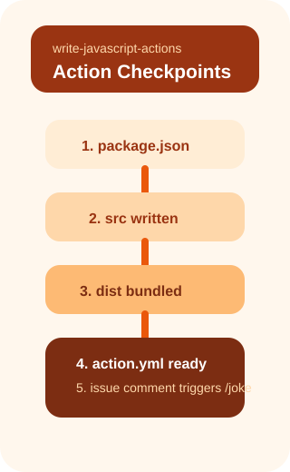

이 실습에서 배우는 것
@actions/core 등 GitHub Actions Toolkit으로 런타임과 상호작용
@vercel/ncc로 코드와 의존성을 하나의 파일로 결합
action.yml로 액션의 입력, 출력, 실행 방식을 정의
커스텀 액션을 워크플로우에서 사용하고 출력 활용
 Actions 툴킷
Actions 툴킷
JavaScript Actions를 빌드하기 위한 패키지 모음
GitHub Actions Toolkit은 JavaScript Actions를 빌드하기 위한 공식 패키지 모음입니다. 런타임 환경과 상호작용하고, 입력을 받고, 출력을 생성합니다.
핵심 라이브러리
@actions/core— 입력/출력, 로깅, 시크릿 마스킹@actions/github— GitHub API 클라이언트@actions/artifact— 아티팩트 업/다운로드@actions/cache— 캐시 관리
import * as core from "@actions/core";
// 입력 읽기
const name = core.getInput("name");
// 출력 설정
core.setOutput("joke", joke);
// 로깅
core.info("Success!");@actions/core는 모든 JS Action의 필수 의존성입니다.

 소스 파일 작성
소스 파일 작성
API 호출 + 액션 출력의 구조
Dad Jokes 액션은 두 파일로 구성됩니다. 관심사 분리를 통해 재사용성과 테스트 용이성을 높입니다.
src/joke.js — API 호출
import request from "request-promise";
async function getJoke() {
const res = await request({
uri: "https://icanhazdadjoke.com/",
headers: { Accept: "application/json" },
json: true
});
return res.joke;
}src/main.js — 진입점
import getJoke from "./joke.js";
import * as core from "@actions/core";
const joke = await getJoke();
core.setOutput("joke", joke); 액션 번들링
액션 번들링
node_modules 없이 배포하는 방법
GitHub Actions는 실행 시 저장소를 다운로드합니다. node_modules를 커밋하면 수천 개 파일이 포함되어 저장소가 비대해집니다.
@vercel/ncc
ncc는 Node.js 프로젝트를 모든 의존성 포함 단일 파일로 컴파일합니다.
// package.json
"scripts": {
"build": "ncc build src/main.js -o dist"
}
$ npm run build
→ dist/index.js (모든 의존성 포함)node_modules는 .gitignore에,dist/는 반드시 커밋해야 합니다.
장점
- 빠른 실행 — 단일 파일 로드
- 깔끔한 저장소 — node_modules 불필요
- 확정적 빌드 — 빌드 시점의 의존성 고정
 액션 메타데이터
액션 메타데이터
action.yml — 액션의 사용 설명서
모든 GitHub Action에는 action.yml 메타데이터 파일이 필요합니다. 액션의 실행 방식과 매개변수를 정의합니다.
핵심 매개변수
name— 액션의 이름 (필수)description— 액션 설명 (필수)inputs— 액션이 받을 데이터outputs— 하위 단계에서 사용할 데이터runs— 실행 방법:using+main(필수)
name: "Joke Action"
description: "Fetches a random joke"
outputs:
joke:
description: "The fetched joke text"
runs:
using: node24
main: dist/index.js 워크플로우 & 출력 활용
워크플로우 & 출력 활용
커스텀 액션을 워크플로우에서 사용하기
만든 액션을 uses: ./로 로컬 참조하거나, 다른 저장소에서 uses: owner/repo@tag로 사용합니다.
name: Joke Action
on:
issue_comment:
types: [created]
jobs:
joke:
if: startsWith(github.event.comment.body, '/joke')
runs-on: ubuntu-latest
steps:
- uses: actions/checkout@v5
- name: Get Joke
id: get-joke
uses: ./
- name: Post Comment
uses: peter-evans/create-or-update-comment@v5
with:
body: ${{ steps.get-joke.outputs.joke }}steps.<id>.outputs.<name>으로스텝 간 데이터를 전달합니다.
실습의 비밀 — 자동 검증
뒤에서 자동으로 돌아가는 검증 시스템
이 실습은 GitHub Actions를 사용해 여러분의 진행을 자동으로 확인합니다.
자동 검증 흐름
- 1단계: 프로젝트 초기화 → push 이벤트 → package.json 확인
- 2단계: 소스 작성 → push 이벤트 → src/ 파일 확인
- 3단계: 번들링 → push 이벤트 → dist/index.js 확인
- 4단계: 메타데이터 → push 이벤트 → action.yml 확인
- 5단계: 워크플로우 → push 이벤트 → YAML 구조 확인
- 6단계: 테스트 → issue_comment → /joke 실행 확인

 핵심 정리
핵심 정리
@actions/core로 입력·출력·로깅을 처리
로직(joke.js) + 진입점(main.js) 분리
ncc → dist/index.js 단일 파일 배포
name, outputs, runs로 액션 정의
uses: ./ 로 로컬 액션 사용 + 출력 전달